Tarjeta rectangular rígida que contiene un sistema de circuito que conecta al procesador con los demás componebtes de la computadora. Es considerada el componete más importante de una computadora.
 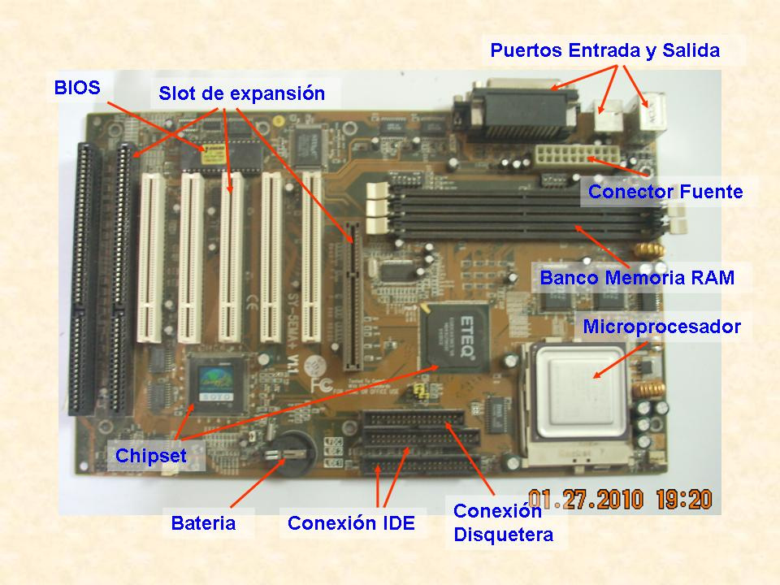
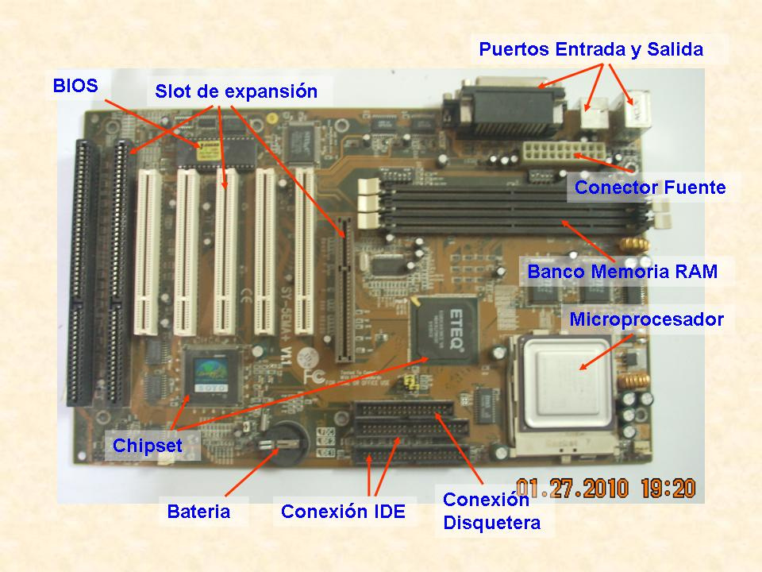Es el componente que usted conoce mas comunmente como CPU, sus funciones basicas son procesar las instrucciones, calcular y manejar el flujo de informacion. Ademas, ejecuta el sistema operativo, aplicaciones y juegos.
El disco duro es el sistema de almacenamiento de informacion, en el se guarda los archivos, programas y aplicaciones que ejecuta la computadora. Se divide en hardware del disco, que comprende los platos, eje, cadezal de lectura/escritura y los circuitos electronicos.
 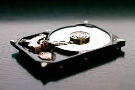
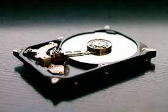La fuente de poder (o fuente de alimentacion)se encarga de suministrar la energia adecuada a los componentes de la computadora, ya que cada uno tiene diferentes valores de alimentacion. se localiza en la parte superior de atras del gabinete y esta sujeta por cuatro tornillos.
 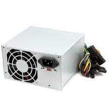
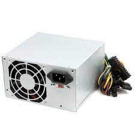La memoria de acceso aleatorio (por sus siglas RAM, Ramdom Access Memory)es la memoria en la que se almacena de forma temporal datos y programas.La RAM se comunica a traves de buses, su funcionamiento se administra gracias a un controlador de memoria.
 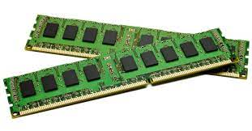
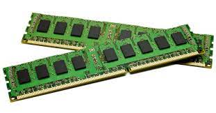La tarjeta de sonido es un componente que convierte las señales analogiocas para que sean reproducidas por un altavoz o parlante; puede reproducir musica, voz o cualquier señal de audio. La compuntadora puede prescindir de este componente, pues no es necesario que se incluya para que este funcione.
- SOFTWARE DE APLICACION:
Aplicaciones de software, son programas diseñados para realizar tareas específicas. Puede incluir software como procesadores de texto y herramientas de hojas de cálculo, o productos de software como sistemas de planificación de recursos empresariales que ayudan a las empresas a gestionar sus operaciones.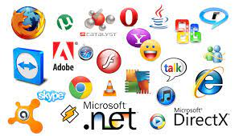
- SOFTWARE DE SISTEMA:
Sistemas operativos, proporcionan la capa base sobre la que se ejecutan todas las demás aplicaciones de software. El software de sistema incluye el propio sistema operativo, los controladores de dispositivos, el middleware, los navegadores web, los reproductores multimedia y muchos más.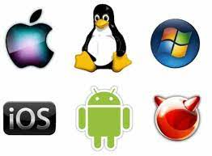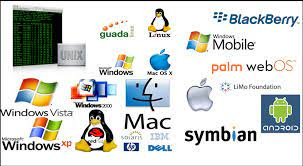
- SOFTWARE DE PROGAMACION:
El software de programación es un conjunto de herramientas y utilidades utilizadas para el desarrollo, programación o creación de programas o aplicaciones informáticas. Estos incluyen editores de texto, compiladores, intérpretes, enlazadores y depuradores, y pueden utilizar diferentes lenguajes de programación.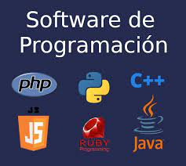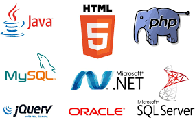
- SOFTWARE DE GESTION:Un software de gestión es un sistema diseñado para ayudar a simplificar grandes proyectos y tareas, además facilita la colaboración de un trabajo en equipo y sus diferentes actividades. Su principal objetivo es aumentar la productividad en los procesos y la operación de un negocio.
SOFTWARE
Los tipos de software pueden clasificarse a grandes rasgos en dos categorías principales: